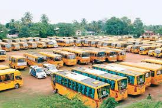

SK Educational Institutions
address:chinthaluru villagem, v.madugula mandal, visakhapatanam district code:592498
Home
About us
Circular
Fee details
Student Login
Bus's
Results
Cantact us
circular page
In this you get notification about exams circulars and time tabels
- Results
- notifications
- holidays
- holidays
- holidays
- hod
- lecturares
- 1

A school is an educational institution designed to provide learning spaces and learning environments for the teaching of students (or "pupils") under the direction of teachers. Most countries have systems of formal education, which is sometimes compulsory.[2] In these systems, students progress through a series of schools. The names for these schools vary by country (discussed in the Regional section below) but generally include primary school for young children and secondary school for teenagers who have completed primary education. An institution where higher education is taught, is commonly called a university college or university.
n addition to these core schools, students in a given country may also attend schools before and after primary (Elementary in the US) and secondary (Middle school in the US) education. Kindergarten or preschool provide some schooling to very young children (typically ages 3–5). University, vocational school, college or seminary may be available after secondary school. A school may be dedicated to one particular field, such as a school of economics or a school of dance. Alternative schools may provide nontraditional curriculum and methods.
- 2
- 3
- branches
- bus
A school is an educational institution designed to provide learning spaces and learning environments for the teaching of students (or "pupils") under the direction of teachers. Most countries have systems of formal education, which is sometimes compulsory.[2] In these systems, students progress through a series of schools. The names for these schools vary by country (discussed in the Regional section below) but generally include primary school for young children and secondary school for teenagers who have completed primary education. An institution where higher education is taught, is commonly called a university college or university.
n addition to these core schools, students in a given country may also attend schools before and after primary (Elementary in the US) and secondary (Middle school in the US) education. Kindergarten or preschool provide some schooling to very young children (typically ages 3–5). University, vocational school, college or seminary may be available after secondary school. A school may be dedicated to one particular field, such as a school of economics or a school of dance. Alternative schools may provide nontraditional curriculum and methods.